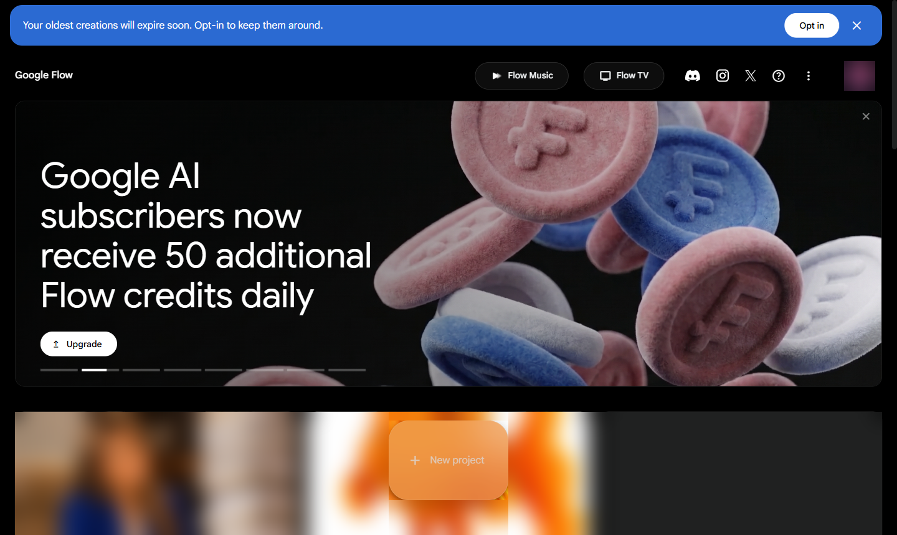
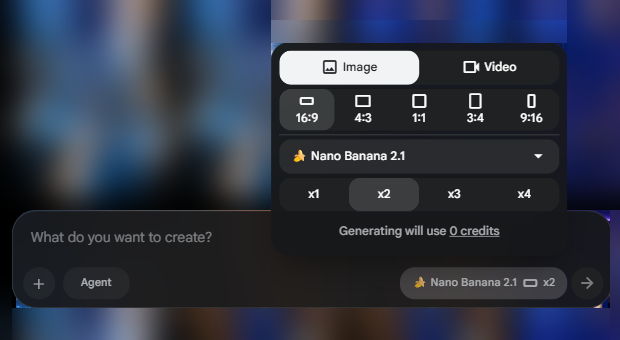
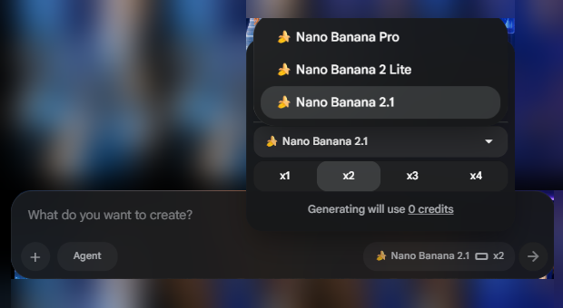

Flow
סרטון ותמונה, מתיאור במילים
הסטודיו של Google ליצירה עם AI. כותבים מה רוצים לראות, ומקבלים תמונה או קליפ קצר.
סטודיו AI לתמונה ולווידאו
עובדים מהדפדפן, בלי להתקין כלום. כל העבודה נשמרת בפרויקטים.
תמונות
מתארים במילים ומקבלים תמונה, במודלים של Nano Banana.
קליפים קצרים
סרטון מתיאור, במודלים של Veo 3.1 ובמודל החדש Gemini Omni Flash 1.1.
הכל בפרויקט אחד
תמונות, סרטונים, דמויות, סצנות וקבצים שהעליתם, מסודרים יחד. ויש גם Flow Music.
הכתובת היום היא flow.google.com. הכלי Whisk נסגר ב-30.4.2026, והיכולות שלו עברו לתוך Flow.
איך מתחילים
שלושה צעדים, עם חשבון Google. מגיל 18 ומעלה.
נכנסים ל-flow.google.com
ומתחברים עם חשבון Google. יש גם אפליקציה לאנדרואיד ולאייפון.
פותחים פרויקט חדש
לוחצים New project במסך הבית. כל פרויקט שומר את התוצרים שלו.
כותבים מה רוצים ליצור
בתיבה What do you want to create? בוחרים תמונה או וידאו, ובודקים כמה קרדיטים זה יעלה.
הכלי מיועד לגיל 18 ומעלה, ולכן הוא לא מתאים לתלמידים. לגבי מנוי, דפי העזרה של Google סותרים: דף אחד כותב שחובה מנוי, ודף הקרדיטים נותן 50 קרדיטים ביום גם בלי מנוי. כדאי לבדוק בחשבון שלכם.
בחשבון בית ספרי (Education Standard, Education Plus או AI Pro for Education) מקבלים 50 קרדיטים ביום. בבתי ספר הכלי כבוי בהתחלה, ומנהל המערכת מפעיל אותו.
המסך הראשון אחרי שנכנסים
בצילום הממשק באנגלית. שפת הממשק תלויה בשפת חשבון Google.
- 1
New project
פרויקט חדש. כאן מתחילים כל תמונה או סרטון.
- 2
Upgrade
שדרוג למנוי. כולם מקבלים 50 קרדיטים ביום, ומנויים מקבלים עוד קרדיטים בכל חודש.

רואים למעלה פס עם Opt in? לפי ההודעה, יצירות ישנות עלולות לפוג אם לא מאשרים לשמור אותן. מה שחשוב לכם, מורידים למחשב.
איפה כותבים, ומה בוחרים
בתוך הפרויקט, תיבת הכתיבה נמצאת למטה. לחיצה על שם המודל פותחת את ההגדרות.
- 1
כותבים מה ליצור
בתיבה What do you want to create?. באותה שורה יש גם כפתור Agent.
- 2
תמונה או וידאו
Image או Video. מתחת בוחרים יחס, למשל 16:9 למצגת או 9:16 לסטורי.
- 3
בוחרים מודל
ומתחת כמה תוצאות לקבל בכל פעם. בצילום אפשר לבחור בין x1 ל-x4.
- 4
בודקים את המחיר
Generating will use N credits אומר כמה קרדיטים היצירה תעלה, לפני שלוחצים.

בוחרים מודל
ברירת המחדל תלויה בחשבון. בצילום שלנו היא תמונה, במודל Nano Banana 2.1.
- 1
לוחצים על שם המודל
הכפתור שליד חץ השליחה פותח את ההגדרות: מודל, יחס ומספר תוצאות.
- 2
בוחרים מהרשימה
שלושה מודלים לתמונות, כולם ממשפחת Nano Banana: Pro, 2 Lite ו-2.1.

מודלי הווידאו מופיעים ברשימה רק אחרי שעוברים ללשונית Video.
2
איך עובדים עם Flow
קרדיטים, פרומפט טוב, והחידושים של 2026.
כל יצירה עולה קרדיטים
כולם מקבלים 50 קרדיטים ביום, גם בלי מנוי. ככה נראה המחיר של סרטון בכל מודל:
Veo 3.1 Lite
זול, טוב לטיוטות. 50 הקרדיטים היומיים מספיקים לחמש כאלה.
Veo 3.1 Fast
פי שניים מ-Lite. שתי יצירות כאלה ביום בחשבון בלי מנוי.
Veo 3.1 Quality
לגרסה הסופית. יותר מכל המכסה היומית בחשבון בלי מנוי.
Omni Flash 1.1
קליפ של עד 10 שניות. ב-360p עולה 4 עד 7, ב-720p עולה 7 עד 15. ייתכן שרק למנויים.
טיפ: עושים טיוטות במודל זול, ורק כשהרעיון עובד עוברים לאיכות גבוהה. היתרה מופיעה בתפריט הפרופיל, למעלה מימין, והמחיר של כל יצירה בשורה Generating will use N credits.
בלי מנוי, יצירת וידאו עלולה להיות חסומה בין 14:00 ל-17:00 לפי UTC. בישראל זה 17:00 עד 20:00 בשעון קיץ, ו-16:00 עד 19:00 בשעון חורף (מ-25.10.2026). תמונות אפשר ליצור גם אז.
ההנחיה שנותנת תוצאה טובה
פרומפט הוא ההוראה שכותבים ל-AI. לוחצים "העתקה", ומדביקים בתיבה של Flow (Ctrl+V).
מה רואים
נורה על שולחן, בכיתה
מה קורה
מתפרקת לחלקיקים שעולים
מצלמה ואור
תנועה איטית, אור בוקר רך
אווירה
רגועה ואופטימית, בלי טקסט
עברית נתמכת רשמית, וישראל ברשימת המדינות. ובכל זאת Google ממליצה לכתוב פרומפטים באנגלית לתוצאה הטובה ביותר. אפשר לבקש מצ'אט AI לתרגם.
מה חדש ב-Flow השנה
מי שהכיר את Flow בשנה שעברה ימצא כמה שינויים גדולים.
Flow Agent
כפתור Agent בתיבת הפרומפט, במחשב בלבד. השאלות אליו לא עולות קרדיטים, אבל מה שהוא יוצר עולה.
Omni Flash 1.1
מודל וידאו חדש: קליפ של עד 10 שניות, וטיוטה זולה ב-360p.
Flow Music
מוזיקה, בכפתור בראש מסך הבית, ליד Flow TV.
אפליקציה בטלפון
יש אפליקציה לאנדרואיד ולאייפון. עובדים גם מהטלפון.
כלים מותאמים
בסרגל הצד של הפרויקט יש Tools, כולל כלים שבונים בעצמכם במילים.
Whisk
נסגר ב-30.4.2026 ועבר לתוך Flow. אין צורך בכלי נפרד.
מה יש בתוך פרויקט
בסרגל הצד של כל פרויקט יש מקום קבוע לכל סוג של חומר.
כל התוצרים
All media, ובנפרד Images ו-Videos.
דמויות וסצנות
Characters ו-Scenes: מה שיצרתם, כדי לחזור אליו בהמשך.
העלאות
Uploads: תמונות וקבצים שהעליתם לפרויקט.
כלים
Tools: הכלים של Flow, וגם כלים מותאמים.
פרויקט אחד לכל נושא: "פתיחת שנה", "יום הורים", "טקס סיום". כך קל למצוא את החומרים כשחוזרים אליהם.
סימני מים, ומה אומרים לקהל
תוכן שנוצר ב-AI כדאי לסמן ככזה, בכיתה, בצוות ומול הורים.
סימן מים גלוי
אופציונלי. מדליקים או מכבים אותו במתג בהגדרות הפרופיל.
SynthID
סימן מים בלתי נראה ש-Google מטמיעה בכל תוצר. נושא טוב לשיעור על אוריינות מדיה.
אנשים אמיתיים
לא מעלים תמונות של תלמידים או עמיתים בלי הסכמה, ולא יוצרים סרטון שנראה כאילו מישהו אמר משהו שלא אמר.
גם כשמכבים את הסימן הגלוי, כותבים ליד הסרטון "נוצר ב-AI". זה בונה אמון.
הצ'אט כותב, Flow מפיק
ChatGPT, Claude או Gemini מכינים תסריט ופרומפט באנגלית. Flow הופך אותם לתמונה או לסרטון.
מתסריט לסצנות
מבקשים מהצ'אט לחלק רעיון לכמה סצנות קצרות, עם פרומפט לכל אחת.
תרגום לאנגלית
כותבים לצ'אט בעברית, ומקבלים פרומפט באנגלית מפורט.
מדביקים ובודקים
מעתיקים ל-Flow, בלי חיבור בין הכלים. טיוטה במודל זול, ואם צריך, מבקשים מהצ'אט לתקן.
3
מתי כן, ומתי לא
בלי הבטחות: מה מעולה, מה מוגבל, ומה עושים עם זה.
מה מעולה, ומה כדאי לדעת מראש
מתי כן
- צריך תמונה מקורית למצגת, להזמנה או לפוסט
- קליפ פתיחה קצר לשיעור, לישיבה או לאירוע
- רוצים להמחיש מושג מופשט בתנועה
- תמונה וסרטון באותו מקום, בלי להתקין כלום
מתי לא, ומה עושים
- קליפים קצרים, לא סרטון שלםמחברים כמה קליפים בכלי עריכה
- הקרדיטים החינמיים נגמרים מהרטיוטות במודל זול, וגימור רק בסוף
- לא לתלמידים: הכלי מגיל 18המורה יוצר, והכיתה צופה ומנתחת
- פרומפט בעברית פחות מדויקמבקשים מצ'אט AI לתרגם לאנגלית
כמה זה עולה
מנויי Google AI בשקלים. הקרדיטים של המנוי באים בנוסף ל-50 היומיים.
בלי מנוי
50 קרדיטים ביום, בלי צבירה. וידאו עלול להיחסם בשעות העומס.
Plus
200 קרדיטים בחודש, ו-400GB אחסון.
Pro
1,000 קרדיטים בחודש, ו-5TB אחסון.
Ultra
10,000 קרדיטים בחודש. ויש גרסה ב-₪749.90 עם 25,000.
בחשבון בית ספרי בודקים קודם את הרישיון: Education Standard, Education Plus ו-AI Pro for Education מקבלים 50 קרדיטים ביום. המחירים משתנים, ולפני החלטה בודקים ב-gemini.google/subscriptions.
רגע, זה בדיוק אני
שלושה מצבים שכולנו מכירים, ואיך Flow עוזר בהם.
מחר שיעור על מושג מופשט
תא שמתחלק, מחזור המים או מעגל חשמלי. קליפ פתיחה קצר מראה את זה בתנועה, לפני שמסבירים.
טיוטה ב-Lite עולה 10 קרדיטים
פותחים ישיבת צוות
במקום שקף פתיחה עם רשימה, קליפ קצר שממחיש את המטרה של השנה. הצ'אט כותב את הפרומפט, Flow מפיק.
שתי טיוטות ובחירה
הזמנה לאירוע יוצאת היום
תמונה מקורית לראש ההזמנה, ביחס 9:16 לוואטסאפ או 16:9 למייל. בלי לחפש תמונה במאגר.
כמה אפשרויות בבת אחת, ובוחרים
למי זה מתאים
לכל מי שצריך תמונה או קליפ, ואין לו צלם או מעצב.
הוראה
קליפי פתיחה לשיעור, המחשה של תהליכים, ותמונות למצגות ולדפי עבודה.
ניהול
קליפ חזון לפתיחת שנה, תמונות למצגת הנהלה, וסרטון קצר לערב הורים.
מזכירות וצוות
תמונות להזמנות, לשלטים ולהודעות בוואטסאפ, בלי לחפש במאגרי תמונות.
שימוש אישי
ברכה מונפשת לחג, הזמנה ליום הולדת, או תמונה לפוסט לקהילה.
ככה זה נראה באמת
תוצרים שיצרנו בכלים של Google, מאותו רעיון: נורה זוהרת. לוחצים כדי להגדיל.
שישה טיפים שלא כתובים במדריכים
טיוטה במודל זול
Lite עולה 10 קרדיטים, Quality עולה 100. משדרגים רק את מה שעובד.
בודקים את המחיר
השורה Generating will use אומרת כמה זה יעלה, לפני שלוחצים.
פרומפט באנגלית
עברית נתמכת, אבל Google ממליצה על אנגלית לתוצאה הטובה ביותר.
מתארים כמו במאי
מה רואים, מה זז, איך המצלמה נעה, איזה אור ואיזו אווירה.
מורידים מה שחשוב
לא סומכים על השמירה בענן לאורך זמן. שומרים עותק אצלכם.
וידאו לא בערב
בלי מנוי, וידאו עלול להיחסם בשעות העומס. עובדים על תמונות בזמן הזה.
שאלות שכולם שואלים
לוחצים על שאלה כדי לפתוח את התשובה.
זה חינמי?
דף הקרדיטים של Google נותן 50 קרדיטים ביום גם בלי מנוי, אבל דף אחר כותב שנדרש מנוי. בודקים בחשבון שלכם. בכל מקרה, רק מגיל 18.
זה עובד בעברית?
כן, עברית נתמכת רשמית. הממשק בדרך כלל באנגלית (תלוי בשפת חשבון Google), ו-Google ממליצה לכתוב פרומפטים באנגלית.
כמה עולה סרטון?
תלוי במודל: Lite 10 קרדיטים, Fast 20, Quality 100, ו-Omni Flash 1.1 בין 4 ל-15. המחיר מופיע לפני כל יצירה.
איפה רואים כמה קרדיטים נשארו?
בתפריט הפרופיל, למעלה מימין. ובתוך חלון ההגדרות של הפרומפט רואים כמה תעלה היצירה הבאה.
מה קרה ל-Whisk?
הוא נסגר ב-30.4.2026, והיכולות שלו עברו לתוך Flow.
יהיה סימן מים על הסרטון?
הסימן הגלוי אופציונלי, ומכבים אותו בהגדרות הפרופיל. סימן בלתי נראה (SynthID) נשאר תמיד. ובכל זאת מציינים שהתוכן נוצר ב-AI.
בדקו את עצמכם
שלוש שאלות. נסו לענות בקול לפני שפותחים.
איך עושים טיוטה ראשונה של סרטון בלי לבזבז קרדיטים?
במודל זול: Veo 3.1 Lite עולה 10 קרדיטים, ו-Omni Flash 1.1 ב-360p עולה 4 עד 7, אם הוא זמין בחשבון. Quality עולה 100, ולכן משדרגים רק כשהרעיון עובד.
איפה בודקים כמה תעלה היצירה, לפני שלוחצים?
בחלון ההגדרות של הפרומפט, בשורה Generating will use N credits.
איך מקבלים פרומפט טוב באנגלית בלי לדעת אנגלית?
מתארים לצ'אט AI בעברית מה רוצים לראות, ומבקשים ממנו פרומפט מפורט באנגלית ל-Flow.
4
עכשיו אתם
לא צופים, עושים. פותחים מחשב או טלפון.
תמונה ראשונה, ב-5 דקות
נכנסים ל-flow.google.com
מתחברים עם חשבון Google.
פותחים New project
ונותנים לו שם, למשל "תרגול".
מדביקים את פרומפט הנורה
מעמוד הפרומפט, או כותבים רעיון משלכם.
בוחרים Image ובודקים את המחיר
יחס 16:9 למצגת. מסתכלים על השורה Generating will use.
יוצרים, בוחרים ומורידים
את התמונה הכי טובה שומרים אצלכם.
בסוף חמש הדקות יש לכל אחד תמונה מקורית. מי שמספיק, מנסה טיוטת וידאו במודל זול.
שלושה דברים לזכור
מתארים כמו במאי
מה רואים, מה זז, אור ואווירה. באנגלית, בעזרת צ'אט AI אם צריך.
קרדיטים בחוכמה
טיוטה במודל זול, גימור באיכות גבוהה, ובודקים את המחיר לפני כל לחיצה.
בודקים גישה מראש
רק מגיל 18. בבית ספר, מנהל המערכת מפעיל את הכלי. בודקים בחשבון שבו תעבדו.
נסו עוד היום
פתחו פרויקט, צרו תמונה אחת, ושלחו אותה למישהו מהצוות.
נכנסים היום
ב-flow.google.com, עם חשבון Google.
אתגר של 5 דקות
פרומפט אחד, תמונה אחת, טיוטת וידאו אחת. רוצים משוב? שלחו לנו.